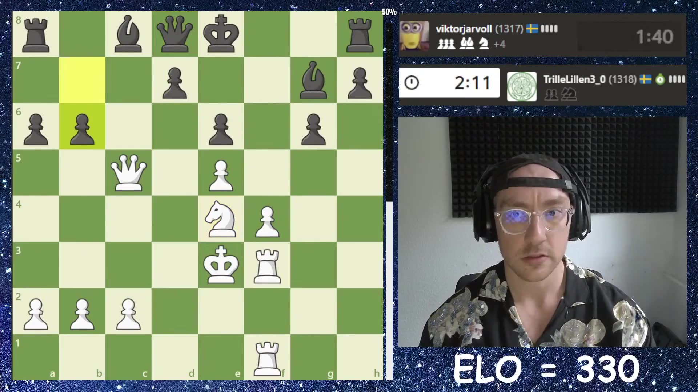
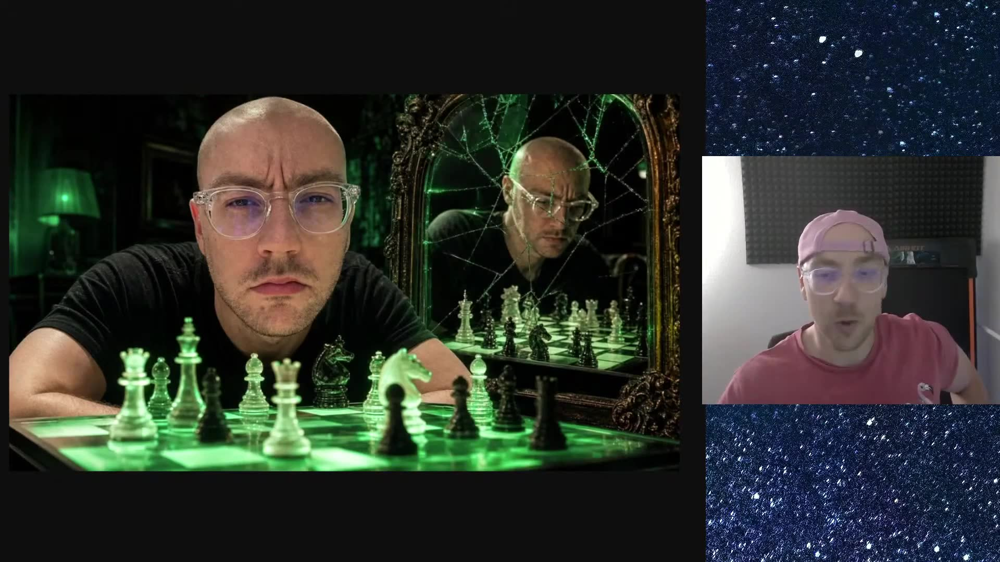
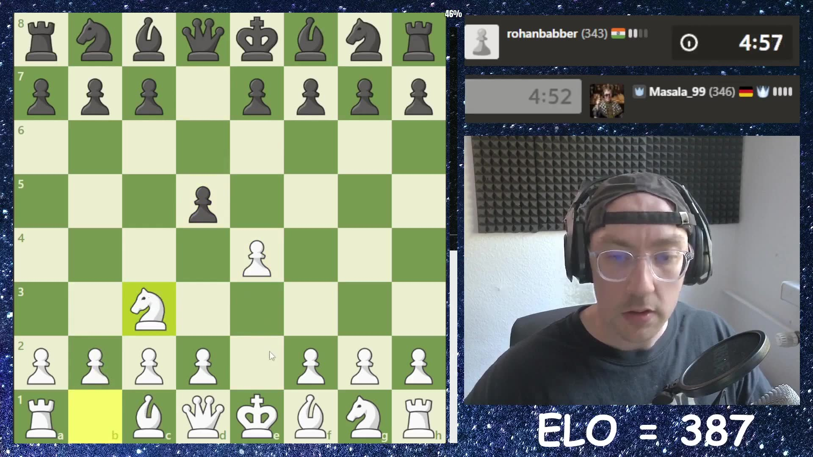
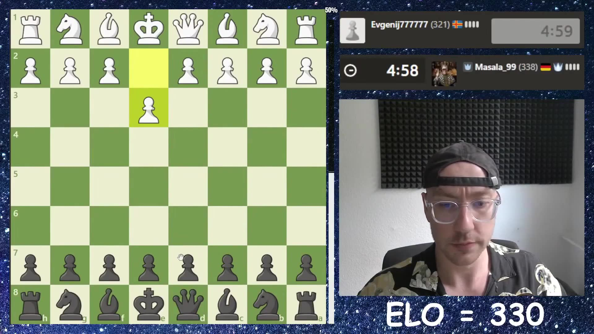
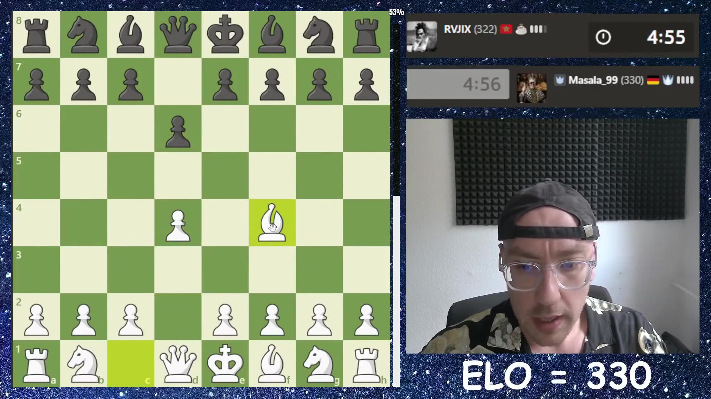
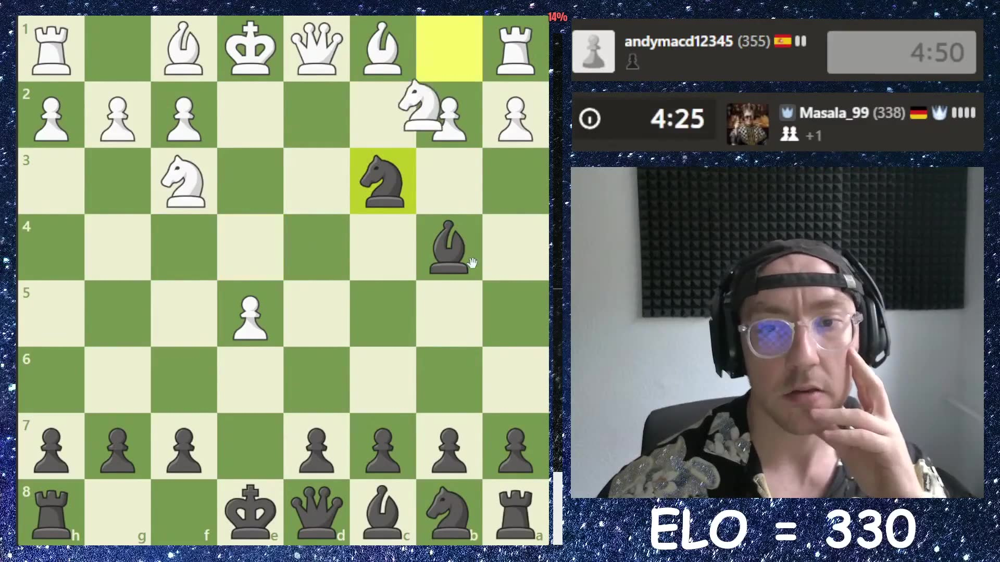

Swedish A

Swedish B
11 long-forms · 12 shorts. Nothing is uploaded until you approve. Tap a thumbnail to play. Your notes & buttons are saved to the pipeline the moment you tap.
 1:02:51▶
1:02:51▶"This might be next on the agenda" -- low elo chess on the road to 1000 ELO. This chess.com game against Ishmael and Mahoo turned on a painful blunder, the kind of beginner chess lesson that makes the climb to 1000 ELO feel very real. This is chess for beginners in real time: chess tactics, chess blunders, chess strategy, and the messy lessons that come from low elo chess on chess.com. 🔔 Subscribe to follow the climb: https://www.youtube.com/@Detective-48 #chess #roadto1000elo #chesscom #chessblunders #lowelochess

42:07▶"In Wales, Tata Steel is called" -- low elo chess on the road to 1000 ELO. This chess.com game against E4 and C4 turned on a painful blunder, the kind of beginner chess lesson that makes the climb to 1000 ELO feel very real. ⏱️ CHAPTERS 0:00 Game 1 4:25 Game 2 4:37 The blunder -- I want to play the center, right 7:17 The blunder 7:36 The blunder 8:20 The big moment 8:22 The big moment 9:09 The blunder 11:02 The blunder -- Okay, I want to open 11:56 The mate threat -- In Wales, Tata Steel is called Every upload is a beginner chess lesson from the board: the tactics I missed, the blunders I made, and the chess.com games pushing me toward 1000 ELO. 🔔 Subscribe to follow the climb: https://www.youtube.com/@Detective-48 #chess #roadto1000elo #chesscom #chessblunders #lowelochess

1:14:03▶"You're gonna literally be crazy good wow it's so impressive man good" -- low elo chess on the road to 1000 ELO. This low elo chess game against Amar had the usual chaos: tactics, blunders, pressure, and another lesson on the road to 1000 ELO. Follow the climb as I learn chess one game at a time -- how to play chess for beginners, what not to blunder, and how every tactic changes the road to 1000 ELO. 🔔 Subscribe to follow the climb: https://www.youtube.com/@Detective-48 #chess #roadto1000elo #chesscom #chessblunders #lowelochess

1:15:11▶"We replayed this game" -- low elo chess on the road to 1000 ELO. This low elo chess game against Spain built toward one decisive checkmate, with every tactic and panic move pushing the road to 1000 ELO forward. ⏱️ CHAPTERS 1:06:36 Game 14 Every upload is a beginner chess lesson from the board: the tactics I missed, the blunders I made, and the chess.com games pushing me toward 1000 ELO. 🔔 Subscribe to follow the climb: https://www.youtube.com/@Detective-48 #chess #roadto1000elo #chesscom #chessblunders #lowelochess
"You know what I'm going to" -- low elo chess on the road to 1000 ELO. This chess.com game against E4 and C4 turned on a painful blunder, the kind of beginner chess lesson that makes the climb to 1000 ELO feel very real. Follow the climb as I learn chess one game at a time -- how to play chess for beginners, what not to blunder, and how every tactic changes the road to 1000 ELO. 🔔 Subscribe to follow the climb: https://www.youtube.com/@Detective-48 #chess #roadto1000elo #chesscom #chessblunders #lowelochess

10:39▶"Thinking about what's coming next and he was not concentrating on what" -- low elo chess on the road to 1000 ELO. This low elo chess game against E4 and C4 had the usual chaos: tactics, blunders, pressure, and another lesson on the road to 1000 ELO. Follow the climb as I learn chess one game at a time -- how to play chess for beginners, what not to blunder, and how every tactic changes the road to 1000 ELO. 🔔 Subscribe to follow the climb: https://www.youtube.com/@Detective-48 #chess #roadto1000elo #chesscom #chessblunders #lowelochess

10:17▶"Get my horse into the action" -- low elo chess on the road to 1000 ELO. This chess.com game against E4 and C4 turned on a painful blunder, the kind of beginner chess lesson that makes the climb to 1000 ELO feel very real. I'm learning how to play chess in public -- every blunder, every checkmate, every lesson for beginner chess players trying to climb. New games on the road to 1000 ELO every day. 🔔 Subscribe to follow the climb: https://www.youtube.com/@Detective-48 #chess #roadto1000elo #chesscom #chessblunders #lowelochess
"Thinking about what's coming next and he was not concentrating on what" -- low elo chess on the road to 1000 ELO. This chess.com game against E4 and C4 turned on a painful blunder, the kind of beginner chess lesson that makes the climb to 1000 ELO feel very real. ⏱️ CHAPTERS 0:00 Game 1 6:41 Game 2 10:51 The blunder Every upload is a beginner chess lesson from the board: the tactics I missed, the blunders I made, and the chess.com games pushing me toward 1000 ELO. 🔔 Subscribe to follow the climb: https://www.youtube.com/@Detective-48 #chess #roadto1000elo #chesscom #chessblunders #lowelochess
"Spotted while I was planning" -- low elo chess on the road to 1000 ELO. This chess.com game against E4 and C4 turned on a painful blunder, the kind of beginner chess lesson that makes the climb to 1000 ELO feel very real. ⏱️ CHAPTERS 0:00 Game 1 2:43 The blunder -- Spotted while I was planning 2:49 The blunder -- Spotted while I was planning 3:36 The blunder -- I'm going to keep trading 3:45 The blunder 3:54 The blunder -- Okay, I'm moving quickly now 4:07 The blunder 4:16 The blunder Every upload is a beginner chess lesson from the board: the tactics I missed, the blunders I made, and the chess.com games pushing me toward 1000 ELO. 🔔 Subscribe to follow the climb: https://www.youtube.com/@Detective-48 #chess #roadto1000elo #chesscom #chessblunders #lowelochess

19:02▶"On take with the queen" -- low elo chess on the road to 1000 ELO. This chess.com game against E4 and C4 turned on a painful blunder, the kind of beginner chess lesson that makes the climb to 1000 ELO feel very real. ⏱️ CHAPTERS 0:00 Game 1 0:42 The blunder -- This could be nicer 5:28 Game 2 15:19 Game 3 16:31 The blunder -- A nice move, because I'm trying to bait 16:37 The blunder -- It's not a nice move 16:54 The blunder 16:59 The blunder 17:14 The blunder 17:16 The mate threat 17:18 The blunder -- Damn it, that's what my plan was 17:32 The blunder -- I'm going to pull back 17:47 The mate threat -- On take with the queen 17:56 The blunder -- I blended my pieces there 18:40 The checkmate Every upload is a beginner chess lesson from the board: the tactics I missed, the blunders I made, and the chess.com games pushing me toward 1000 ELO. 🔔 Subscribe to follow the climb: https://www.youtube.com/@Detective-48 #chess #roadto1000elo #chesscom #chessblunders #lowelochess
 11:28▶
11:28▶"You blended your queen for" -- low elo chess on the road to 1000 ELO. This low elo chess game against Algeria built toward one decisive checkmate, with every tactic and panic move pushing the road to 1000 ELO forward. ⏱️ CHAPTERS 0:00 Game 1 0:26 Game 2 0:53 The mate threat -- You blended your queen for 1:16 Game 3 5:05 The blunder -- Is okay I gotta get active I'm getting 5:48 The big moment -- Whoa it's getting his queen active 6:02 The mate threat -- It's just relentlessly attacking my king now and 6:13 The blunder -- Mile away I mean look at this 6:21 The mate threat -- Next he's coming from 8:02 Game 4 9:17 The blunder -- Up and show off start taking me apart 9:21 The blunder -- Up and show off start taking me apart 9:24 The blunder -- Taking me apart instantly whoa you're pre -moving I'm learning how to play chess in public -- every blunder, every checkmate, every lesson for beginner chess players trying to climb. New games on the road to 1000 ELO every day. 🔔 Subscribe to follow the climb: https://www.youtube.com/@Detective-48 #chess #roadto1000elo #chesscom #chessblunders #lowelochess